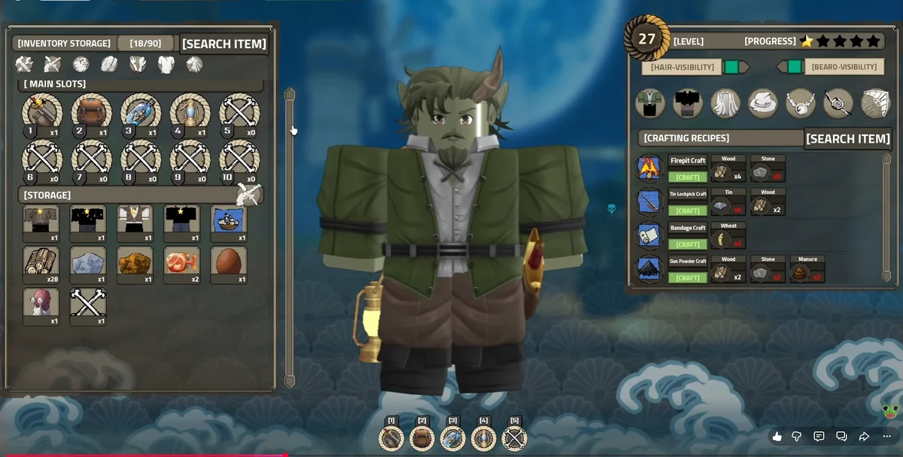
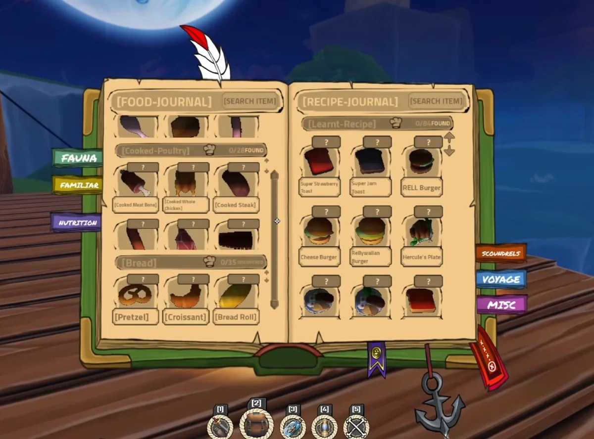

Temps d’attenteConfirmé
Un minuteur s’affiche pendant l’attente, et ramener la ligne le réduit : la pêche n’est pas qu’un jeu d’attente.
DOSSIER
Huit métiers, leurs outils, recettes, minijeux et progression : pêche, cuisine, artisanat, bois, minage, navigation, vol et médecine. Compilé le 27 novembre 2026 à partir du wiki communautaire et de captures.
TALENTS
Pêche, cuisine, artisanat, bois, minage, navigation, vol et médecine : tout ce que tu fais hors combat. Chaque métier a son arbre de talents, ses outils, ses minijeux et ses recettes.
Sources : pages d’activités et de talents du wiki communautaire (consultées le 27 novembre 2026) et captures de démonstration fournies. Le jeu n’est pas sorti : les coûts, durées et probabilités restent « non confirmés » et sont signalés comme tels.
| Métier | Points max. | Arbre de talents | Outil de départ | Carnet |
|---|---|---|---|---|
| Pêche | 500 | 3 branches · 16 cartes | Canne Sailor Rod (Boat Shop) | Fishing Dex |
| Cuisine | 500 | 2 branches · 11 cartes | Foyer (Firepit) à fabriquer | Recipe Dex |
| Artisanat | 500 | 2 branches · 11 cartes | Recettes simples, puis forge de Rambo | Craftsman Dex |
| Bois | 500 | 2 branches · 10 cartes | Hache de bûcheron (Rambo) | Craftsman Dex |
| Minage | 500 | 2 branches · 11 cartes | Pioche (Mining Axe, Rambo) | Craftsman Dex |
| Navigation | Non précisé | 2 branches · 11 cartes | Barre de navire, longue-vue | Journal des trésors |
| Vol | 500 | 3 branches · 15 cartes | Crochets (Tin Lockpick) | Non précisé |
| Médecin | Non précisé | 2 branches · 10 cartes | Infirmerie et blueprints | Non précisé |
Comment gagner des points ? En terminant des activités, en complétant les Dex et en découvrant de nouvelles recettes. Selon le wiki, stats et nœuds de métiers partagent les Stat-Points : investir dans un métier coûte de la puissance de combat.

ÉCONOMIE
Les métiers forment une chaîne de production : les métiers de récolte alimentent ceux de transformation.
| Matière première | Fournie par | Utilisée pour |
|---|---|---|
| Bois | Bois (hache) | Foyer, Tin Lockpick, poudre à canon ; combustible du foyer |
| Pierre | Minage (n’importe quel rocher) | Foyer (Firepit) |
| Minerai d’étain et de cuivre | Minage | Bronze Bar, Tin Lockpick |
| Poisson | Pêche et chasse de faune marine | Cuisine, matériaux d’artisanat, Fishing Dex |
| Blé, fumier | Récolte | Bandage ; poudre à canon |
| Lavande, miel, citron, orange | Récolte | Sirop contre la toux (médecine puis cuisine) |
| Peau, nageoires, lumière de Yahu | Combat contre le Leviathan Yahu | Yahu Greatsword (forge) |
Synergies : Minage + Artisanat donnent un forgeron (armes, barres, améliorations jusqu’à +20). Pêche + Cuisine donnent un cuisinier de bord. Médecin + Cuisine sont nécessaires pour certains remèdes. Navigation + Minage (pelle) servent la chasse au trésor.
MÉTIER 1 / 8
Lancer la ligne, attendre une touche, puis ramener le poisson dans la barre. La pêche sert aussi à invoquer le Leviathan Yahu.
Quand un poisson mord, une barre horizontale apparaît avec l’icône du poisson qui bouge dessus. Penche avec A et D et maintiens le clic pour ramener, en gardant le poisson dans la barre. La barre se remplit en bleu ; pleine, la prise arrive avec le message NICE CATCH.
Le PNJ de la Boat Shop donne la Sailor Rod pendant la quête Riven A. Graves. Équipe-la depuis la barre d’action, tiens-toi sur le ponton et lance.
Chaque prise rapporte des points proportionnels à sa rareté. La chasse à la faune marine compte aussi, ainsi que la complétion du Fishing Dex.
Un minuteur s’affiche pendant l’attente, et ramener la ligne le réduit : la pêche n’est pas qu’un jeu d’attente.
Poids, lieu et rareté par poisson, avec un savoir de 0 à 10 par fiche. Les notifications indiquent « Discovered » la première fois, puis « Caught ».
La Sailor Rod de départ, puis la Dragon Rod et la Leviathan Rod dans l’arbre de talents.
Entrées du Dex, matériaux d’artisanat et ingrédients de cuisine. Les plus rares devraient compter pour les plats avancés ou les améliorations.
| Étape | Détail |
|---|---|
| 1 · Repérer | Cherche une icône bleue clignotante, puis repère l’icône Leviathan à la longue-vue (depuis la vigie, la direction du point de pêche s’affiche). |
| 2 · Naviguer | Va jusqu’au repaire, l’eau brille en bleu clair. |
| 3 · Lancer | Passe à la canne avec R et lance depuis le navire. Une canne Leviathan est requise. |
| 4 · Ramener | Après environ une minute : « Yahu took the bait! », Yahu apparaît avec une barre 500/500. |
| 5 · Se préparer | Prends un navire plus gros qu’un sloop : sa salve d’orbes rouges peut détruire un navire d’un coup. |
MÉTIER 2 / 8
On commence au foyer, on finit dans une cuisine avec minijeux de timing et recettes par blueprints.
| Station | Fonction |
|---|---|
| Foyer (Firepit) | Premier niveau : se pose n’importe où, brûle du bois et cuit la viande crue. Cuisson indiquée N/A tant que le feu n’est pas allumé. |
| Plan de cuisine | Un comptoir à trois options : Cook, Chef Slicer et Exit. Cook transforme des ingrédients en plat depuis un blueprint découvert. |
| Cuisinière | Poêle à frire et casserole bleue. Mets un ingrédient, surveille la jauge et retire-le dans la zone verte. Attendre trop longtemps fait échouer. |
| Four | Cuit un ingrédient avec la même jauge de timing. |
| Planche (Chef Slicer) | Minijeu de tranchage au couperet, façon Fruit Ninja. Il donne de l’expérience de cuisine. |
| Mixeur | Pour les boissons : les ingrédients tombent dans la carafe. |
Bois ×4 et pierre ×5. Équipe-le depuis la barre d’action (emplacement 5) et pose-le au sol. Appuie sur Add sur la ligne [WOOD], puis Cook sur [RAW MEAT].
Clique sur un ingrédient et choisis la méthode, puis retire-le dans la zone verte. Fry et Bake traitent plusieurs objets à la fois ; Boil un seul.
Parmi les déblocages, la Bronze Pot et la Gold Pot.
| Plat | Station | Ingrédients |
|---|---|---|
| Chicken Stew | Plan de cuisine, Cook | 4 champignons · 8 os · 40 tranches de carotte · 3 cuisses de poulet cuites |
| Orange Juice | Plan de cuisine, mixeur | 2 bananes · 12 tranches d’orange |
| Fried Egg | Cuisinière, poêle | 1 œuf cru |
| Cough Syrup | Station de médecine, puis cuisine | 20 lavande · 3 miel · 20 citron · 15 orange |
| Entrée | Méthode | Résultat |
|---|---|---|
| 1 carotte | Slice | 8 tranches de carotte |
| 1 poulet entier cru | Slice | 3 filets de poulet cru · 2 cuisses de poulet cru |
| 1 poulet entier cru | Bake ou Boil | Résultat non montré |
| 1 œuf cru | Fry | 1 œuf frit |
| 2 filets de poulet cru | Fry | 2 filets cuits |

MÉTIER 3 / 8
L’artisanat transforme matériaux et blueprints en objets : des recettes simples depuis ton sac, et la forge du forgeron Rambo pour le lourd.
La liste Crafting Recipes du sac ou de l’écran de personnage, avec un bouton vert Craft quand tu as les matériaux.
Parle à Rambo, choisis Craft, un blueprint, puis Assemble (le bouton affiche [Resources Missing] s’il te manque des matériaux) et Smelt pour fondre le minerai dans un creuset.
Un minijeu de coulée puis de refroidissement et de pressage. Les armes ajoutent le martelage sur l’enclume et le meulage à la roue.
| Objet | Où | Ingrédients |
|---|---|---|
| Firepit | Liste de recettes | 4 bois · 5 pierres |
| Gun Powder | Liste de recettes | 2 bois · 2 pierres · 2 fumiers |
| Bandage | Liste de recettes | 2 blés |
| Tin Lockpick | Liste de recettes | 4 étain · 2 bois |
| Bronze Bar | Forge : Assemble puis Smelt | 6 minerais d’étain · 6 minerais de cuivre |
| Yahu Greatsword | Forge | 1 peau de Yahu · 1 nageoire · 1 lumière de Yahu · 1 fer |
Un interrupteur qui fait jouer les minijeux à ta place (rouge éteint, vert allumé). Les développeurs veulent que ceux qui jouent à la main gagnent plus d’expérience.
Le menu d’objet affiche Enhance 0/20 sur les armes et les vêtements. Les armes fortes ont moins d’améliorations, les faibles davantage, pour que toutes restent viables. Rambo propose Upgrade à côté de Craft.
Bronze, Silver, Gold, Leviathan et Stormstone Hammer.
Equus, Krane et Moo (plastrons), Globe (casque), ainsi que la marmite de cuisine.
Les blueprints d’armes (Auroran, Badar, Kudan, Mossando, Necrofin…) sont listés dans la section Armes du codex.
MÉTIER 4 / 8
Abattre un arbre et ramasser le bois : la ressource de base de presque toutes les recettes.
Rambo donne une hache de bûcheron et une hache d’étain pendant la quête de départ. Frappe un arbre jusqu’à ce qu’il se brise en tronc, souche et branches, puis ramasse la bûche : « Gained 1x Wood ».
Une bulle de cerise peut apparaître sur le tronc, et des cerises tombent au sol. Hors tutoriel, les arbres ne repoussent pas vite et peuvent te tuer.
Bronze, Silver, Gold et Leviathan, plus la carte Woodcutting Mastery.
Le bois sert au foyer (×4), au Tin Lockpick, à la poudre à canon et de combustible pour cuire.
MÉTIER 5 / 8
Frapper les rochers pour obtenir pierre et minerai, et creuser avec la pelle. Les prisonniers minent aussi pour réduire leur peine.
Rambo donne une pioche pendant la quête de départ. Frappe un rocher gris pour obtenir 1 minerai d’étain. N’importe quel rocher du monde donne de la pierre avec un outil de récolte équipé.
Équipe la pelle et creuse un tas de sable sur une plage de Wilderness pour déterrer un coffre doré. Un minijeu de crochetage s’ouvre, puis une fenêtre de butin avec un butin local et un butin global.
Au camp Marine, le prisonnier enchaîné à une ancre mine des rochers, et chaque rocher raccourcit la peine.
| Outil | Paliers | Arbre |
|---|---|---|
| Pioche | Bronze, Silver, Gold, Leviathan | Minage (plus Mining Mastery) |
| Pelle | Bronze, Silver, Gold, Leviathan, Stormstone, Summonance | Navigation |
| Boussole | Bronze, Silver, Gold | Navigation |
6 minerais d’étain et 6 de cuivre, à fondre à la forge de Rambo.
Chaque coup donne « Gained 1x Stone ». Elle sert à fabriquer le foyer.
MÉTIER 7 / 8
Crocheter des serrures, se faufiler et piller. Gros gain, gros risque : se faire prendre coûte de la réputation.
Fais glisser l’aiguille avec A et D jusqu’à ce que la serrure brille en vert : elle s’ouvre. Une jauge rouge courbe s’affiche en bas de l’écran. Le Movie 3 l’a montré ouvrant une cage de prison.
Accroupis-toi avec C, approche une cible marquée d’un anneau cyan, mets-la à terre puis V pour l’exécuter et ramasser le sac de butin. Impossible en combat.
Se faire prendre en train de voler baisse la réputation auprès des factions proches, qui peuvent devenir hostiles.
| Niveau | Comportement |
|---|---|
| Facile | Mouvement lent de l’aiguille, pardonne les mauvaises directions |
| Moyen | Plus rapide ; une mauvaise direction remet la progression à zéro |
| Difficile | Très rapide ; le crochet casse sur une mauvaise direction |
Ces niveaux viennent d’anciennes notes des développeurs et ne sont pas confirmés dans la version actuelle.
| Famille | Paliers |
|---|---|
| Serrures | Bronze, Silver, Gold, Leviathan |
| Crochets | Bronze, Silver, Gold, SeaStone, Sapphire, RubyGold |
| Fabrication | Tin Lockpick : 4 étain et 2 bois |
| Branches | Bargain, Locksmith, Looter, Resource, plus Thieving Mastery |
MÉTIER 8 / 8
Soigner les maladies qui se propagent par la météo et l’infection : avoir un médecin à bord de ton navire ou de ton crew est conseillé.
| Maladie | Cause | Soin |
|---|---|---|
| Rhume (Common Cold) | Rester trop longtemps dans une tempête légère | Médecine de base |
| Grippe | Progression du rhume | Non confirmé |
| Peste (Plague) | Combattre des boss marins ou un Leviathan sous la pluie (petite chance) ; barre de santé teintée de rouge | Undying Brew (potion violette), après Medicine V |
| Flesh Rot | Citée par son nom | Pénalités finales non confirmées |
Contagion : un malade peut tousser et propager la maladie. Tousser sur un PNJ lui fait appeler à l’aide : PNJ et Marines te poursuivent environ 15 secondes, et un Marine peut même t’attaquer. Les développeurs veulent ajouter une maladie zombie très contagieuse, pas encore en jeu.
À l’infirmerie ou maison de médecine : choisis un blueprint, appuie sur Assemble, puis COOK à une station de cuisine.
Cough Syrup, Deadmans Bottle, Fishmans Bottle, Fleshknit Syrup, Heat Syrup et Mindless Brew.
20 lavande, 3 miel, 20 citron et 15 orange.
Débloqué dans l’arbre du médecin après Medicine V. Le boire affiche « Plague Cured ».
Cartes Doctor et Medicine I à V.
Le rôle exact d’un médecin d’équipage n’est pas confirmé.
CARNETS
Les Dex sont des registres de découverte. Les compléter rapporte des points de talent.
| Dex | Métier lié | Contenu |
|---|---|---|
| Fishing Dex | Pêche | Poissons et Leviathans : poids, lieu, rareté, savoir 0/10 |
| Recipe Dex | Cuisine | Recettes découvertes ; Food-Journal et Recipe-Journal en jeu |
| Craftsman Dex | Artisanat, bois, minage | Ressources, outils et fabrications |
| Adventure Dex | Exploration | Découvertes d’aventure |
Chaque carnet visible dans le journal de bord (Nutrition, Fauna, Voyage, Misc) suit ce que tu as trouvé. Compléter un Dex et finir des activités est la voie pour atteindre les 500 points d’un métier.
CHOISIR
Recommandations de planification, théoriques tant que le coût en Stat-Points n’est pas connu.
| Objectif | Métiers principaux | Secondaires | Pourquoi |
|---|---|---|---|
| Forgeron de combat | Artisanat, Minage | Bois | Matériaux, barres, armes et améliorations jusqu’à +20 |
| Cuisinier de bord | Cuisine, Pêche | Bois | Plats à partir des prises et du bois du foyer |
| Médecin de crew | Médecin, Cuisine | Pêche | Les remèdes passent par la cuisine ; pas de maladie sans soin |
| Explorateur de mers | Navigation, Minage (pelle) | Vol | Boussoles, pelles et coffres enterrés |
| Pillard discret | Vol | Navigation | Serrures de coffres et cages ; attention à la réputation |
| Chasseur de Leviathans | Pêche, Navigation | Artisanat | Canne Leviathan, navire solide, Yahu Greatsword |
Budget : les métiers partagent les Stat-Points avec les stats. Pour un build de combat, 5 % à 15 % de ton budget en métiers est un ordre de grandeur de précaution ; un build économie peut monter à 40 %. Voir le dossier de builds.
SOURCES
Pages consultées sur le wiki communautaire le 27 novembre 2026.
Pêche · Cuisine · Artisanat · Bois · Minage · Navigation · Vol · Médecin · Maladies · Amélioration